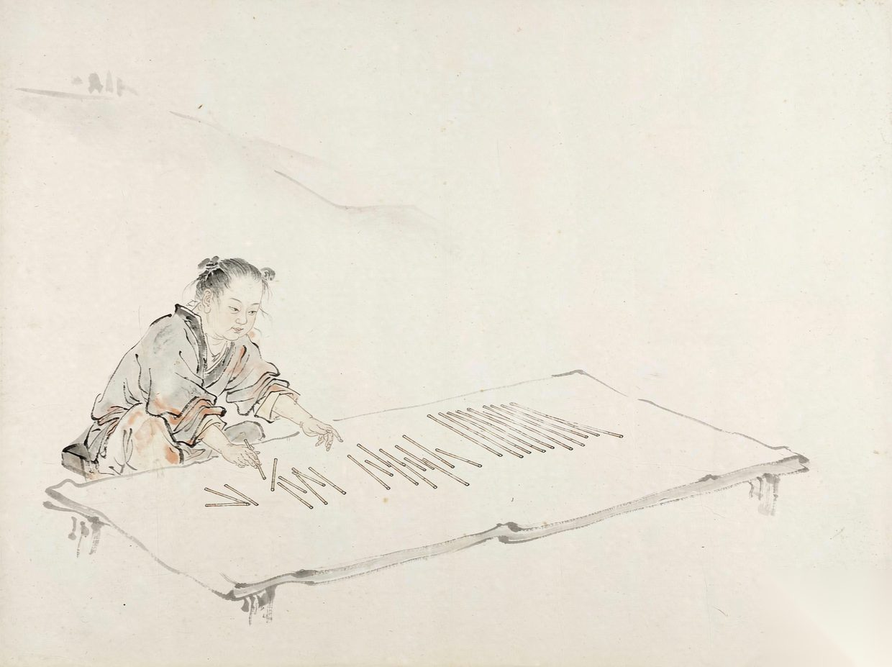
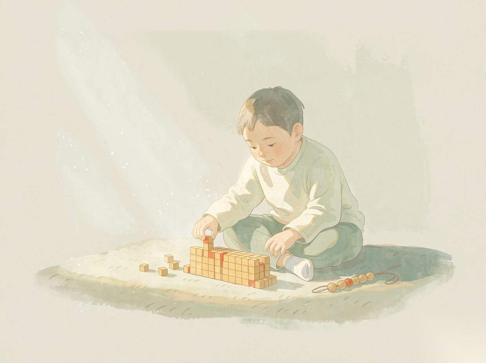

上一课我们知道，向外求学先要知晓数理、识读文字。这一句，就是数理的入门：从一开始，数到十；由十再往上，推衍到百。
古人用的是十进制。一个为基础，十个一合成十，十个十合成百。
看着只是数数，背后藏着一个很重要的道理：万物都是从微小的起点，一步步积累、推演开来。
不是一下子就抵达宏大。所有庞大的数字、复杂的事物，都起于「一」这个开端。

这个道理，也和我们前面学的功课相通。
孝心、宽厚的心，也起于微小的一念体恤，慢慢坚持，慢慢扩充；学问也是从认识一个字、明白一件小事开始，日积月累，越学越广。
数的递进，就是成长的隐喻：跬步千里，起于最初的那一步、那一念。

有序的积累，才会扎实稳固。
总想一步学会很多，忽略基础；觉得小事微不足道，不愿用心。
守住起点，循序渐进，慢慢生长；明白宏大由微小汇聚而成，重视开端。
这两句不只是口诀。三条做法，把秩序感带进日常。
一、不局限于背诵数字。借助实物，让孩子看见「进位」、感知「积累」，把数理秩序和成长道理关联起来。
二、承接本末次序。数理秩序是工具，背后「由微至广」的道理反过来滋养孝悌本心——体恤之心，也是一次次小事慢慢养厚。
三、承接教与学的二分。家长提供教具、引导观察秩序，属施教一侧；孩子自己感知、体会递进规律，是自主的修习。
接上选择力练习：秩序规律不变，孩子可以用自己喜欢的方式（积木、石子、算珠）去探索数字。
一，数之始；十，十个一；百，十个十——十进制递推。全句：计数之法，自一开始，进而为十；自十复进，而为百。
承接「知某数」，开启数的推演启蒙，从基础进制带出「由本达末」的思维范式。
二 · 命题考辨勘误重点：很多人只当成幼儿数数口诀，忽略它承载的东方思维。
这里的「一」，不只是数字 1。它与《道德经》「道生一」同一种思维范式：一切繁复，皆从一个本源次第展开。
德行上：一念之仁（一），持续持守，扩充为孝悌、博爱；数理上：一为起点，层层进位，衍生无穷数目。
文本用十进制这个人人能懂的例子，把「由本生末、循序推扩」的思维教给初学之人。
三 · 中西对照东方象数：数不单是计量，同时象征万物演化次第，由简入繁。
数学：十进制位值制，是人类最通用的计数体系，降低推演的认知负担。
认知心理学：人的学习天然是渐进式，从简单原型逐步迁移到复杂内容。
反向思辨：「由一推多」的思维容易走向单向线性的执念；世界也有并行与突变，不可只用这套线性模型概括一切。
四 · 与前后课的张力次第链条继续延伸：首孝悌 → 次见闻 → 知某数，识某文 → 一而十，十而百。
呼应第十三课「人不学，不知义」：义有本末，事有先后，与数字的递进秩序同构。
呼应第十二课「玉不琢，不成器」：打磨也是一点点、一次次持续用功。
呼应第四课「教之道，贵以专」：专一持续、循序积累，方能有成。
一、既然万物起于一，那么这个最初的「一」，还能不能再往前追溯？
二、线性递进的学习方式，如何兼容跳跃式、顿悟式的成长？
三、二进制与其他进制同样成立，为何古人启蒙优先选用十进制来讲这个道理？